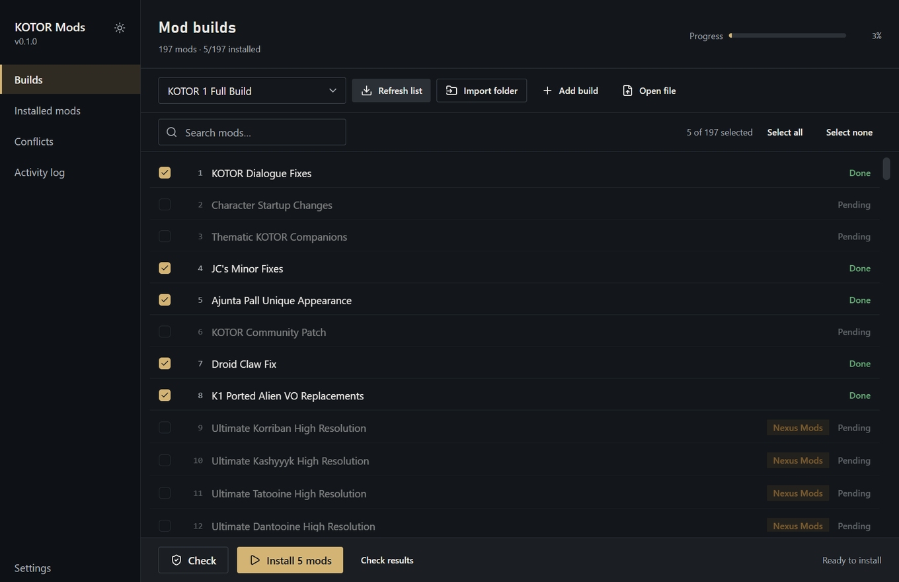
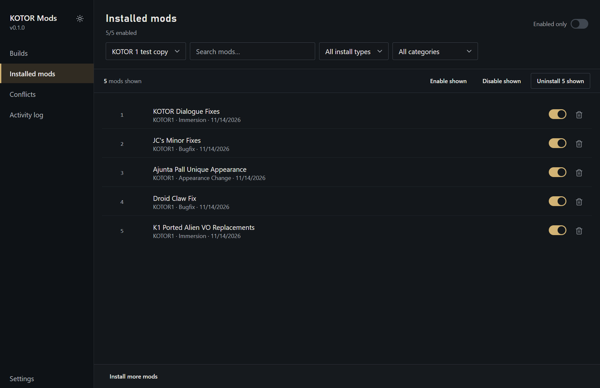
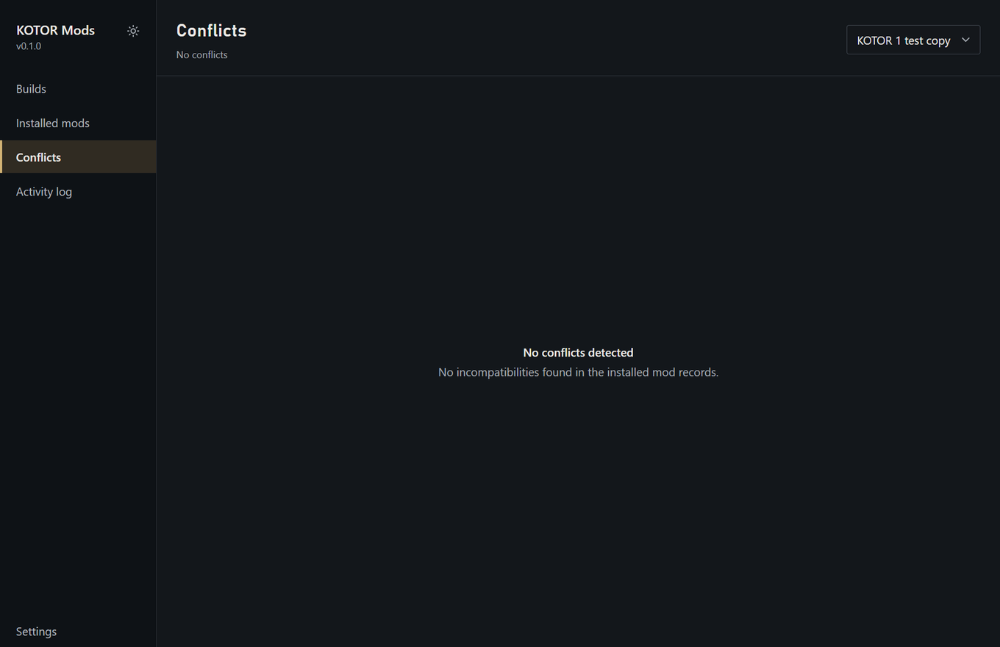
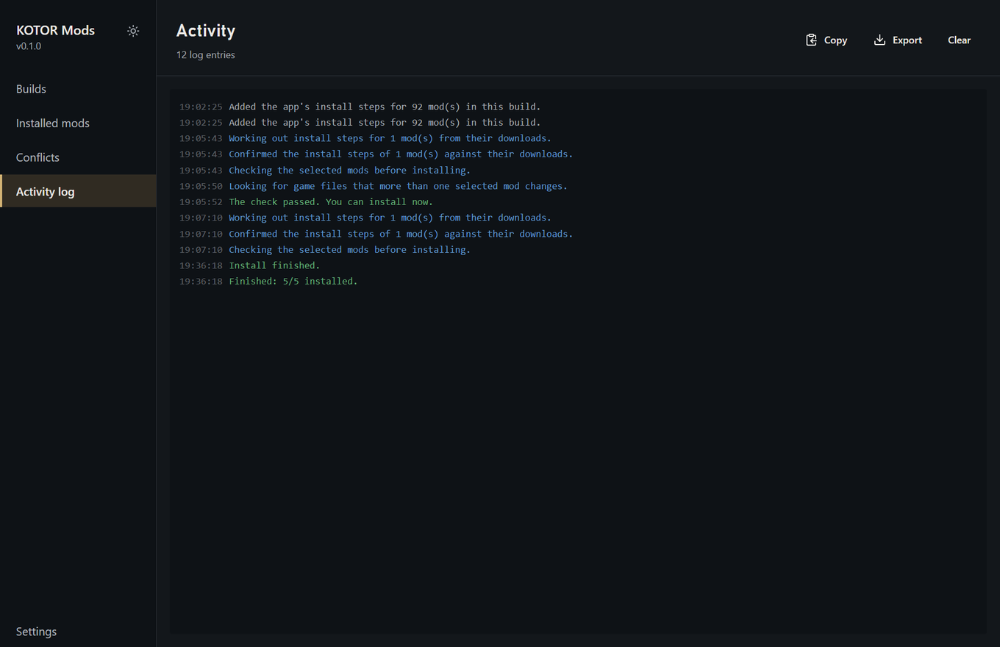
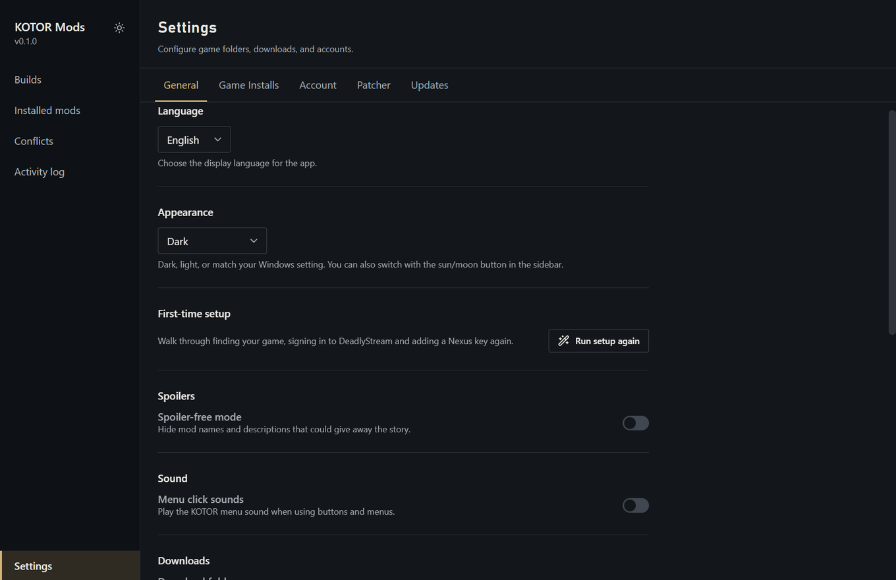

ModSync/For players/Desktop app
The desktop app
Pick a community mod build, let the app download the mods, check the install without touching your game, then install. This page walks through every screen.
First-time setup
The first time you open the app, Welcome to KOTOR Mods walks you through three quick steps:
- Your game. The app looks for KOTOR and KOTOR 2 in Steam, GOG and Origin/EA folders. When it finds one, click Use this. If it finds nothing, it asks for the game folder the first time you install, or you can add it later in Settings.
- DeadlyStream account. Most KOTOR mods are hosted on DeadlyStream. Signing in is optional: the app checks and installs without it, but some DeadlyStream files only download for signed-in members.
- Nexus Mods key. Paste your personal Nexus API key so the app can fetch the mods hosted on Nexus. Get your API key opens the right page.
Every step has Skip for now, and Skip setup skips the lot. You can run the steps again later from Settings > General > Run setup again.
Finding your way around
The sidebar on the left has five screens:
- Builds
- Choose a mod build, pick its mods, then check and install.
- Installed mods
- Everything installed in the selected game, with switches to turn mods on and off.
- Conflicts
- Mods that should not be combined, and mods that change the same game files.
- Activity log
- A running record of what the app did, to copy or export when you ask for help.
- Settings
- Game folders, downloads, accounts, the patcher and updates.
The sun and moon button at the bottom of the sidebar switches between light and dark.
Builds

Choose a build
Pick a build from the list at the top. The community builds for KOTOR 1 and KOTOR 2 are already there. Refresh list fetches the latest mod list from the build's guide.
- Add build adds a build of your own from a build guide's web address.
- Open file opens an instruction file from your computer (TOML, JSON, YAML, XML or Markdown) as a build.
- A build you added can be removed again with Delete this build. That only removes it from the app, not from your game.
Pick your mods and their options
Tick the mods you want, or use Select all and Select none. The count of selected mods is shown above the list. Click a mod, or View details, to see its page description and screenshots, the build's notes and guide instructions, the steps the installer will take, and:
- Options, the extra choices a mod offers. They start at the build's defaults.
- Needs these mods and Cannot be combined with, taken from the build.
- Compatibility notes from the guide.
Mods marked Aspyr only only work with the KOTOR 2 Aspyr update and are skipped for other versions of the game.
Check
Click Check. The app downloads the mod files, works out the install steps, then tests the whole install without changing your game. Check results lists what it found, grouped as:
- Folders and settings
- Mods that cannot be combined
- Install order
- Mod files and steps
- Installer choices
- Practice install
When it says Everything looks good. You can install., you are ready. Otherwise Go to first problem takes you to what needs fixing, and Copy report copies the whole report for a bug report or a forum post. Install stays locked until a check passes.
Install
Click Install (it shows how many mods, for example Install 40 mods). The app runs the check again, then installs the mods in the build's order and stops at the first failure.
- Pause holds the install at the next safe point: between downloads, or between mods, never halfway through one. Resume carries on from there.
- Stop ends the run at the next safe point.
- Retry failed runs the mods that failed again, for example after you downloaded a file by hand.
- If a mod needs a step the app cannot do for you, it is marked Manual install required. Open folder and Show readme help you finish it, then click Mark as installed.
If an install did not finish, the Builds screen shows a banner with Restore. Restore puts your game folder back to how it was before that install started. See Safety and recovery.
Import your own archives
Import folder installs mod archives from a folder on your computer, even if they are not in a build. You can also drop a ZIP, 7z or RAR archive, or a folder, onto the window. Load a build first so the app knows which game the mods are for.
Downloads from DeadlyStream and Nexus Mods
The app downloads into the Download folder set in Settings. Open download folder on a mod opens that mod's files.
- DeadlyStream: downloads work without an account where the site allows it. Sign in under Settings > Account for files that need one. The app keeps the signed-in session in your system's credential store, never your password.
- Nexus Mods: needs your API key. Premium accounts download automatically. Free accounts need one click on the Nexus page per mod: when the app asks, click Mod Manager Download on the mod's Nexus page and the app catches the link and downloads the file into the right place. It only takes over nxm:// links while it is waiting for one, and never replaces another mod manager's link handling.
- Nexus limits how much each account can download per hour and per day. If it stops the downloads, the app pauses the Nexus mods and carries on with everything else. Press Install again a few hours later to finish the rest.
A mod the app cannot download for you tells you where to get it: download it from the linked page, place the archive in the mod's download folder, then retry.
Installed mods

Pick a game install at the top to see what is installed in it. Search by name, filter by install type or category, or show Enabled only.
- Each mod's switch turns it on (Enable) or off (Disable) without deleting it.
- Delete mod removes the mod's files from your game. A mod that patched shared game files cannot be cleanly removed on its own. The app says so and offers to remove only the library entry, leaving the patched files in place. Use Restore to undo those.
- Remove duplicates merges mods that are listed more than once. Nothing is removed from your game. Entries that share a name but installed different files are left alone and marked with an orange badge, so you can check both.
- A mod's details show its Installed files, marked new or overwrote.
Conflicts

Conflicts come from the same install test that Check runs, so run a check first. They come in two kinds:
- Potential incompatibilities
- Mods the build says not to combine. Check the build guide before you change anything. Disable followed by a mod's name turns off the mod you want to drop, if it is installed. If it is not installed yet, untick it on the Builds screen.
- Load-order notes
- Mods that change the same game files. The last installed version takes priority, which is the mod installed last in the build's order. These are marked No action needed. If one causes trouble in game, disable the mod that causes it.
Activity log

Everything the app does is written here: downloads, checks, installs, errors and what you changed. Copy and Export save it for a bug report.
Settings

- General
- Language, appearance and menu click sounds. Download folder is where mod archives are kept. Folder for unpacking mods is where archives are unpacked while checking and installing; pick a drive with plenty of free space. Largest unpacked size per mod (GB) stops an archive that would unpack to more than that. Spoiler-free mode hides mod names and descriptions that could give away the story, where the build provides other text. Only download widescreen files for my screen uses the size of the monitor the app is on to pick the matching widescreen files; turned off, it downloads every size.
- Game Installs
- The game folders the app installs into. Installs found on this computer are listed with Use this install, or click Add install and choose a folder. Each one shows which game was found in it. Set active picks the one the other screens use.
- Account
- Sign in to or out of DeadlyStream, and add your Nexus Mods API key. A valid key shows the account it belongs to and how much Nexus allowance is left today and this hour.
- Patcher
- Patcher for TSLPatcher mods chooses the program that applies TSLPatcher and HoloPatcher mods: OdyPatcher, HoloPatcher or KPatcher. Patcher executable points to your own copy instead. Let mods run their patcher or installer is on by default because most builds need it. Turn it off to stop any program from a mod running; mods that need one then fail with a clear message.
- Updates
- Check for updates looks for a newer version, shows its release notes and offers Download & install. A copy that cannot update itself says so and links to the new version on Nexus Mods or GitHub instead.